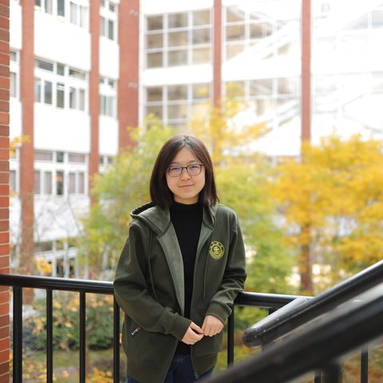
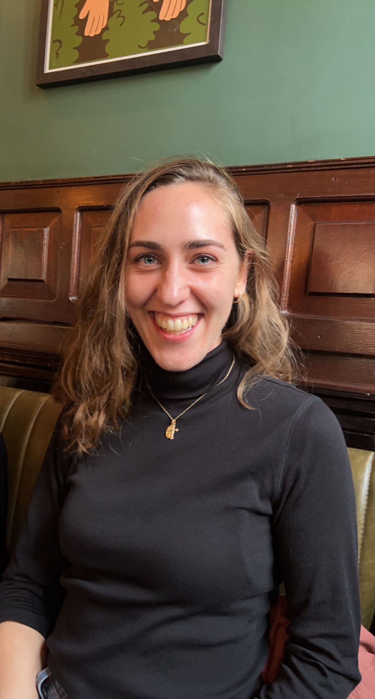
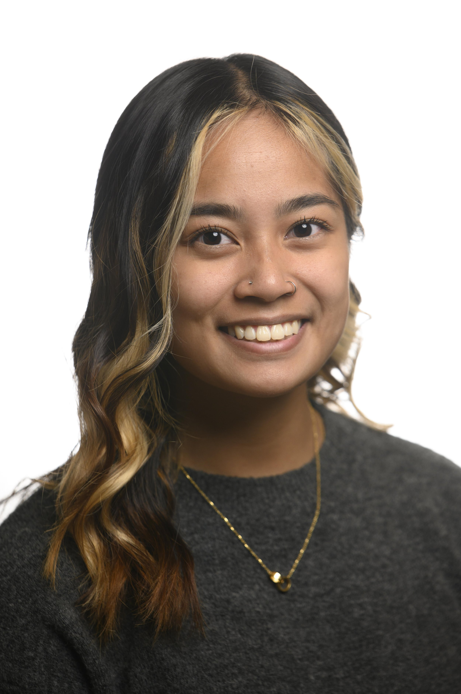

Overview
The Weekly Exchange is a 50-minute gathering for PhD students across
institutions to connect, share, and support one another. Each week, one member
leads a session. Sometimes they present ongoing research or invite feedback;
other times they share something they care about outside of academia. Whether
it's a deep dive into a social computing project or an exploration of creative
passions, these sessions help us build trust, surface insights, and reimagine
what it means to grow together in research.
Over time, these informal exchanges have become the foundation for workshops and collaborations within Positech. In many ways, we see the exchange itself as an open-ended exploration. What does it mean to build a loosely connected but consistent, low-stakes yet meaningfully engaged research community? How can it support the kind of work and life we're trying to cultivate?
If you're interested in joining, feel free to reach out at positech.research@gmail.com with a short note about who you are, what you're working on, and how it relates to the broader themes Positech is thinking about. To help keep the group aligned and grounded, new members are brought in by consensus. Usually, that means having a personal connection with someone already in the group. This helps us keep the space intentional and supportive as it evolves!
Over time, these informal exchanges have become the foundation for workshops and collaborations within Positech. In many ways, we see the exchange itself as an open-ended exploration. What does it mean to build a loosely connected but consistent, low-stakes yet meaningfully engaged research community? How can it support the kind of work and life we're trying to cultivate?
If you're interested in joining, feel free to reach out at positech.research@gmail.com with a short note about who you are, what you're working on, and how it relates to the broader themes Positech is thinking about. To help keep the group aligned and grounded, new members are brought in by consensus. Usually, that means having a personal connection with someone already in the group. This helps us keep the space intentional and supportive as it evolves!
Current Members



Bingxu Han
Stanford University

Louisa Conwill
University of Notre Dame
Ruotong Wang
University of Washington
Nisha Devasia
University of Washington
Alumni


Shanley Corvite
University of Michigan